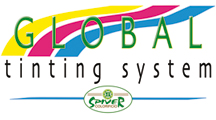
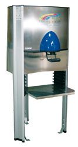
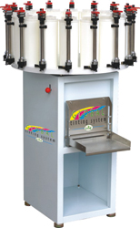
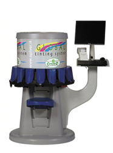
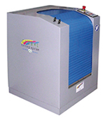

Применяя подобные системы колерования, вы сможете добиться всех ваших целей вне зависимости от масштабов ваших объектов.
Применяется для приготовления:
- Красок;
- Водных и эпоксидных эмалей;
- Пропиток для дерева;
- Декоративных покрытий;
- Глазурей быстрого высыхания.
Тонер электронный D-200

Тонер ручной

Тонер электронный D-200

Миксер

Преимущества:
- Широкий диапазон цветов (более 20000 цветов);
- Работа с универсальными основаниями;
- Эффективное использование красителей (12 супер-концентрированных универсальных красителей,
7 органических оксидов обладающих высокой устойчивостью к УФ и атмосферным воздействиям);
- Работа программного обеспечения и колориметрии в сопряжении с Спектрофотометр высокой надежности и точности.